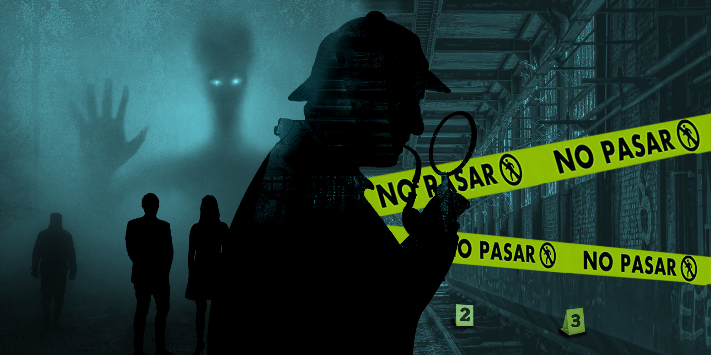
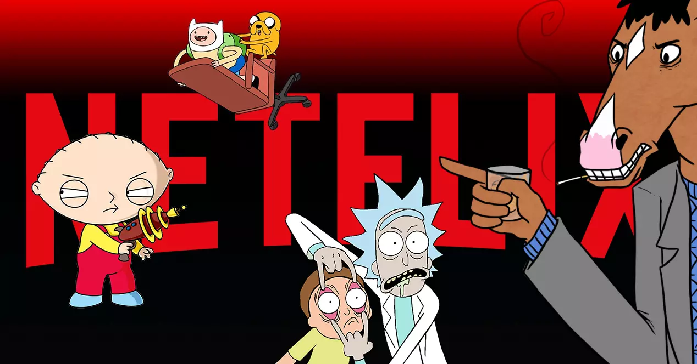

Las peliculas de anime son una categoria que me gustan bastante porque muchas veces motiva y llama la atencion

Las peliculas de misterio y terror las encuentro muy llamativas porque son de pensar bastante en resolver acertijos y tratar de sobrevivir en una situacion que casi nadie podria sobrevivir

Las caricaturas o dibujos animados no los suelo ver mucho, pero en su mayoria los suelo ver porque son una fuente de entretenimiento y desetres que sirve para a su ves matar el tiempo